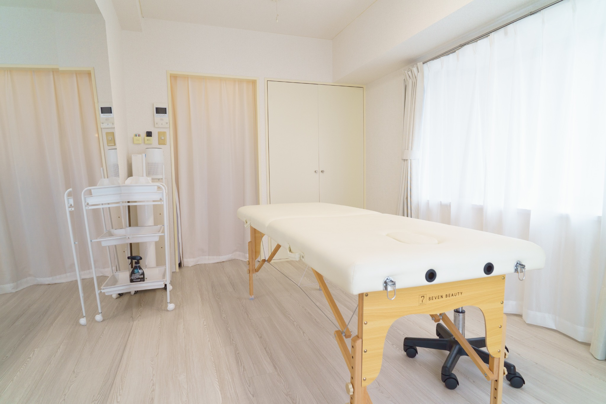
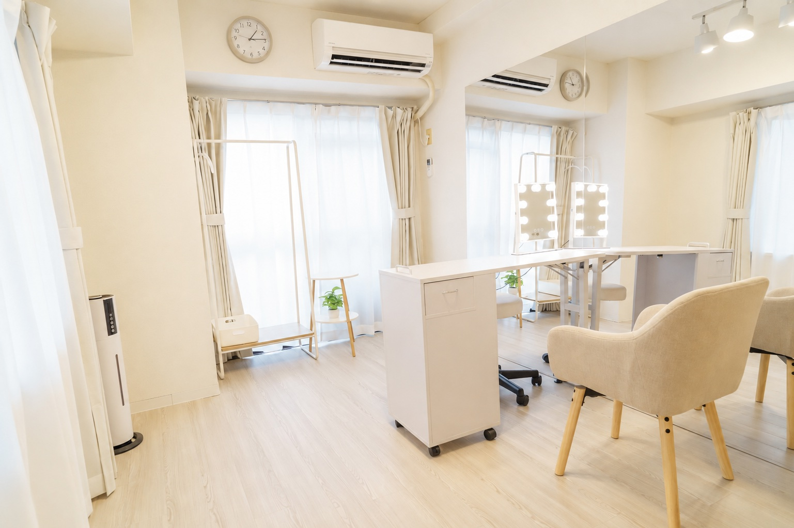
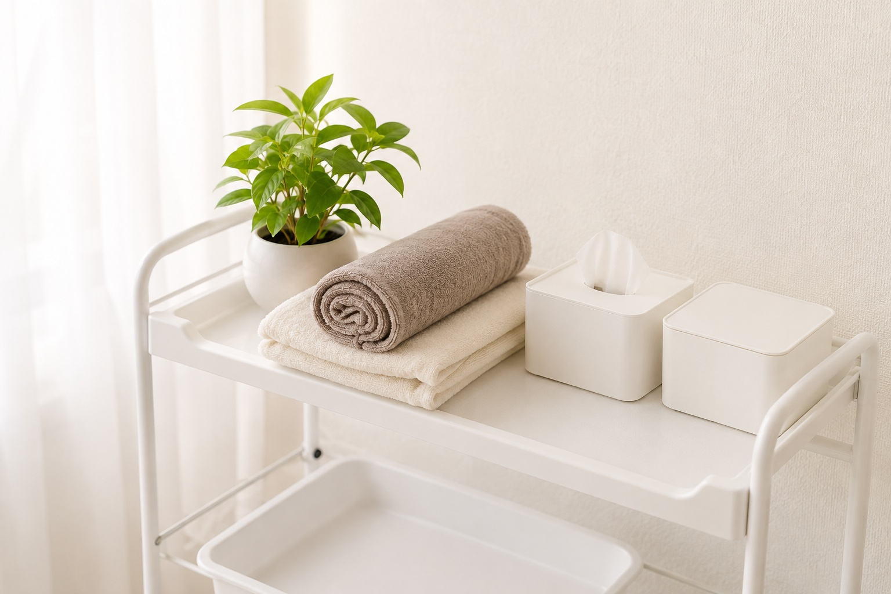

Body Care 60
ボディケア 60分
¥7,700
首・肩・背中・脚など、気になる部分を中心に全身をバランスよくケアするベーシックコース。
NISHIOGIKUBO / TOKYO
CONCEPT
疲れ方も、心地よいと感じる強さも、人それぞれ。
body care studio HAKUは、カウンセリングを大切にしながら、その日の状態やご希望に合わせてボディケアをご提案する完全予約制のプライベートサロンです。
強さを一方的に決めるのではなく、お声を伺いながら心地よい時間を一緒につくっていきます。


OUR CARE
施術前に気になることやお疲れの箇所、ご希望の過ごし方を伺います。
「今日は静かに過ごしたい」「ここを中心にお願いしたい」など、小さなご希望も遠慮なくお聞かせください。
THERAPIST
HAKU therapist Shinya
同じ「肩がつらい」というお悩みでも、 疲れ方や心地よいと感じる施術は人それぞれ。
HAKUでは、施術前のお話を大切にし、 その日のからだの状態やご希望を伺いながら、 お一人おひとりに合わせたケアをご提案します。
「強い施術が苦手」「今日はゆっくり過ごしたい」 「ここを中心にケアしてほしい」など、 小さなご希望もどうぞ遠慮なくお聞かせください。
丁寧なカウンセリング
その日の状態に合わせたケア
安心して過ごせる時間
※プロフィール・人物写真はサンプルです。実際の制作時はお客様の内容に差し替えます。
SALON


※掲載している店内写真は、レンタルサロン white rabbit 西荻窪店で撮影したもの、および同店写真をもとにしたイメージカットを含みます。
ACCESS
施術はレンタルサロン white rabbit 西荻窪店 にて行っています。

RESERVATION
ご予約は公式LINEより承っております。
ご質問だけでも、どうぞお気軽にご相談ください。
※このボタンはサンプルです。実際の制作時に公式LINE・予約システムへ接続します。